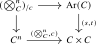
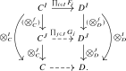

The preceding section constructed the \(\infty \)-operad \(\oDay (\Mm _C,\Mm _D)\) and described its multimorphism animae. We now give conditions under which these multimorphisms are represented by tensor products in \(\Fun (C,D)\). The resulting Day convolution tensor product is computed by left Kan extension.
Proposition 16.2.1 (Lurie (2017), Proposition 2.2.6.16, Winges (2026), Proposition 4.1). Let \((C, \otimes _C, \unit _C)\) and \((D, \otimes _D, \unit _D)\) be symmetric monoidal \(\infty \)-categories. Let \(\Kk \) be the collection of all relative slice categories \((\bigotimes _C^n)_{/c}\) defined by the pullback squares

for every natural number \(n \geq 0\) and every object \(c \in C\). Assume that the following two conditions are satisfied:
- (1)
-
The \(\infty \)-category \(D\) admits all \(\Kk \)-indexed colimits.
- (2)
-
The tensor product functor \(\otimes _D\colon D \times D \to D\) preserves \(\Kk \)-indexed colimits in each variable separately.
Then the Day convolution operad \(\oDay (\Mm _C,\Mm _D)\) defines a symmetric monoidal structure \(\otimes _{\Day }\) on \(\Fun (C,D)\).
In practice, we will usually apply Proposition 16.2.1 through the following corollary, so we record it before proving the proposition.
Corollary 16.2.2. Let \(C\) and \(D\) be symmetric monoidal \(\infty \)-categories. Assume that \(C\) is small, that \(D\) is cocomplete (i.e., admits all small colimits), and that the tensor product of \(D\) preserves small colimits in each variable. Then the Day convolution operad \(\oDay (\Mm _C,\Mm _D)\) defines a symmetric monoidal structure \(\otimes _{\Day }\) on \(\Fun (C,D)\).
Proof. Every relative slice category \((\bigotimes _C^n)_{/c}\) is a pullback of the diagram \(C^n \to C \times C \leftarrow \Ar (C)\). Since \(C\) is small, so are \(C^n\) and \(\Ar (C)\), and hence so is \((\bigotimes _C^n)_{/c}\). The collection \(\Kk \) of Proposition 16.2.1 therefore consists of small \(\infty \)-categories, so both of its conditions are implied by the assumptions on \(D\). □
Proof of Proposition 16.2.1. We wish to show that the Day convolution operad \(\Oo := \oDay (\Mm _C, \Mm _D)\) defines a symmetric monoidal \(\infty \)-category, i.e., that the functor \(p_{\Oo }\colon \Oo ^{\otimes } \to \Span (\Fin )\) is a cocartesian fibration. Recall from Lemma 14.4.9 that it is enough to show that the following two conditions are satisfied:
- (a)
-
For every finite collection of functors \(\{F_i\}_{i \in I}\), there exists a functor \(G = \bigotimes _{i \in I}^{\Day } F_i\) and a multimorphism \(\{F_i\}_{i \in I} \to G\) in \(\Oo \) inducing for every other functor \(H\colon C \to D\) an equivalence \[ \Hom _{U(\Oo )}(G,H) \iso \Oo (\{F_i\};H). \]
- (b)
-
For a map \(f\colon I \to J\) of finite sets, if we let \(G_j := \bigotimes _{i \in f^{-1}(j)}^{\Day } F_i\) for all \(j \in J\), then the canonical map \[ \bigotimes _{i \in I}^{\Day } F_i \to \bigotimes _{j \in J}^{\Day } G_j \] is a natural isomorphism of functors \(C \to D\).
For part (a), we define \(G\) as the left Kan extension of the composite functor \[ \prod _{i \in I} C \xrightarrow {\prod _{i \in I} F_i} \prod _{i \in I} D \xrightarrow {\otimes _D} D \] along the tensor product functor \(\otimes _C\colon C^I \to C\). Explicitly, for an object \(c \in C\), its value is given by the colimit: \[ G(c) := \colim _{\{c'_i\}_{i \in I} \in (\bigotimes _C^I)_{/c}} \left ( \bigotimes _{i \in I} F_i(c'_i) \right ). \] The existence of this left Kan extension is guaranteed by condition (1) of our hypothesis, as the indexing \(\infty \)-category \((\bigotimes _C^I)_{/c}\) is in our collection \(\Kk \). The universal property of this left Kan extension provides a natural transformation \[ \eta \colon \bigotimes _D^I \circ \prod _{i \in I} F_i \Longrightarrow G \circ \bigotimes _C^I, \] which by Proposition 16.1.10 corresponds to a multimorphism \(\eta \colon \{F_i\}_{i \in I} \to G\) in \(\Oo \). The universal property of left Kan extension says that for any other functor \(H\colon C \to D\), composition with \(\eta \) induces an equivalence \[ \Hom _{U(\Oo )}(G,H) \simeq \Nat (G, H) \iso \Nat \left ( \bigotimes _D^I \circ \prod _{i \in I} F_i, H \circ \bigotimes _C^I \right ) \simeq \Oo (\{F_i\}_{i \in I};H), \] as desired.
We now show that also (b) holds. Let \(f\colon I \to J\) be a map in \(\Fin \), and write \(G_j := \bigotimes _{i \in f^{-1}(j)}^{\Day } F_i\) for all \(j \in J\). We need to show that the canonical transformation \[ \bigotimes _{i \in I}^{\Day } F_i \to \bigotimes _{j \in J}^{\Day } G_j \] is a natural isomorphism of functors \(C \to D\). To help visualize this, consider the following diagram:

Since left Kan extensions compose, it will suffice to show that the composite \(\bigotimes _D^J \circ \prod _{j \in J} G_j\colon C^J \to D\) is the left Kan extension of the composite \(\bigotimes _D^I \circ \prod _{i \in I} F_i \colon C^I \to D\) along \((\bigotimes _C^f)\colon C^I \to C^J\). By the pointwise formula for Kan extensions, this amounts to showing that for every tuple \((c_j)_{j \in J} \in C^J\), the map \[ \colim _{(c'_i) \in (\bigotimes _C^f)_{/c}} \bigotimes _{i \in I}^D F_i(c'_i) \to \bigotimes _{j \in J} G_j(c_j) \] is a natural isomorphism. Since the functor \(\bigotimes _C^f\colon C^I \to C^J\) is a product of the individual functors \(\bigotimes _C^{I_j}\colon C^{I_j} \to C\), the indexing \(\infty \)-category \((\bigotimes _C^f)_{/c}\) on the left is a product over \(j \in J\) of the relative slice categories \((\bigotimes _C^{I_j})_{/c_j}\). But we also have \[ G_j(c_j) = \colim _{(c''_i) \in (\bigotimes _C^{I_j})_{/c_j}} \bigotimes _{i \in I_j}^D F_i(c''_i), \] and since the functor \(\bigotimes _{j \in J}^D\colon D^J \to D\) preserves the relevant colimits in each variable separately it follows that the map is a natural isomorphism. This finishes the proof. □
Remark 16.2.3. The proof of the proposition provides an explicit description of the tensor product functor \[ \bigotimes _{\Day }^I\colon \Fun (C,D)^I \to \Fun (C,D) \] for every finite set \(I\). For \(I = \lra {0}\) and \(I = \lra {2}\), this specializes as follows:
- The monoidal unit \(\unit _{\Day }\colon C \to D\) of the Day convolution monoidal structure is the left Kan extension of \(\unit _D\colon * \to D\) along \(\unit _C\colon * \to C\).
- The Day convolution \(F \otimes _{\Day } G\) of two functors \(F,G\colon C \to D\) is the left Kan extension of \(C \times C \xrightarrow {F \times G} D \times D \xrightarrow {\otimes _D} D\) along \(\otimes _C\colon C \times C \to C\).
Proposition 16.2.4 (Functoriality of monoidal Day convolution). Assume the relevant Day convolution monoidal structures exist.
- (1)
-
A lax symmetric monoidal functor \(u\colon C'\to C\) induces a lax symmetric monoidal precomposition functor \[ u^*\colon \Fun (C,D)\longrightarrow \Fun (C',D). \]
- (2)
-
Let \(\Kk \) be the collection of relative slice categories from Proposition 16.2.1. If \(v\colon D\to D'\) is symmetric monoidal and preserves \(\Kk \)-indexed colimits, then postcomposition induces a symmetric monoidal functor \[ v_*\colon \Fun (C,D)\longrightarrow \Fun (C,D'). \]
Proof. Part (1) is induced by precomposition on Day convolution operads. For part (2), postcomposition first gives a lax symmetric monoidal refinement. Since \(v\) is symmetric monoidal and preserves the colimits in the pointwise formulas of Remark 16.2.3, it carries each Day convolution product and the Day convolution unit to the corresponding product and unit in \(\Fun (C,D')\). Its structure maps are therefore isomorphisms. □
Lemma 16.2.5 (Left Kan extensions and Day convolution). Let \(u\colon A\to B\) be a symmetric monoidal functor, and let \(D\) be a symmetric monoidal \(\infty \)-category. Assume that the Day convolution monoidal structures on \(\Fun (A,D)\) and \(\Fun (B,D)\) exist. Suppose that for every object \(b\in B\), the \(\infty \)-category \(D\) admits colimits indexed by the relative slice category \(u_{/b}\), and that its tensor product preserves these colimits separately in each variable. Then pointwise left Kan extension along \(u\) defines a symmetric monoidal functor \[ u_!\colon \Fun (A,D)\longrightarrow \Fun (B,D). \] In particular, this applies when \(A\) and \(B\) are small, while \(D\) is cocomplete and its tensor product preserves small colimits separately in each variable.
Proof. The hypotheses on the relative slice categories ensure that pointwise left Kan extension along \(u\) exists. Its right adjoint \(u^*\) is lax symmetric monoidal by Proposition 16.2.4. By Proposition 14.5.11, it therefore suffices to show that for every finite collection of functors \(F_i\colon A\to D\), indexed by a finite set \(I\), the canonical map \[ u_!\bigl (\bigotimes _{i\in I}^{\Day }F_i\bigr ) \longrightarrow \bigotimes _{i\in I}^{\Day }u_!(F_i) \] is an isomorphism.
Set \[ H:=\bigotimes _D^I\circ \prod _{i\in I}F_i\colon A^I\to D. \] By the description of Day convolution in Remark 16.2.3 and the composition law for left Kan extensions, the source of this map is the left Kan extension of \(H\) along \[ A^I\xrightarrow {\smash {\bigotimes _A^I}}A\xrightarrow {u}B. \] On the other hand, the pointwise formula for left Kan extensions and the assumptions on the tensor product of \(D\) show that \[ \bigotimes _D^I\circ \prod _{i\in I}u_!(F_i)\colon B^I\to D \] is the left Kan extension of \(H\) along \(u^I\colon A^I\to B^I\): the relative slice of \(u^I\) over a tuple \((b_i)_{i\in I}\) is the product of the relative slices \(u_{/b_i}\), and its colimit may be computed iteratively. Applying Day convolution and composing left Kan extensions therefore identifies its target with the left Kan extension of \(H\) along \[ A^I\xrightarrow {u^I}B^I\xrightarrow {\smash {\bigotimes _B^I}}B. \] Since \(u\) is symmetric monoidal, these two composite functors are naturally equivalent. This map is therefore an isomorphism, as desired. □
As a basic instance of Corollary 16.2.2, we obtain:
Corollary 16.2.6. Let \(C\) be a small symmetric monoidal \(\infty \)-category. Then the functor category \(\Fun (C,\An )\) admits a symmetric monoidal structure via Day convolution.
Proof. The cited corollary applies since \(\An \) admits small colimits and the functor \(- \times -\colon \An \times \An \to \An \) preserves colimits in both variables. □
For later use, we record the following description of the internal hom for Day convolution.
Proposition 16.2.7. Let \(C\) be a small symmetric monoidal \(\infty \)-category and let \(D\) be a complete closed symmetric monoidal \(\infty \)-category for which the Day convolution symmetric monoidal structure on \(\Fun (C,D)\) exists. Then this symmetric monoidal structure is closed. Its internal hom is pointwise given by the end formula \[ \iHom _{\Fun (C,D)}(F,G)(X) \simeq \int _{Y \in C} \iHom _D(F(Y), G(X \otimes _C Y)). \] Here the integral denotes the end of Definition 24.6.3.
Proof. It suffices to show that for every third functor \(H\colon C \to D\) there is a natural equivalence \[ \Nat (H \otimes _{\Day } F, G) \simeq \Nat \left (H, \int _{Y \in C} \iHom _D(F(Y), G(- \otimes _C Y))\right ). \] Since the Day convolution is a left Kan extension, the left-hand side is equivalent to the anima \[ \Nat (H(-) \otimes _D F(-), G(- \otimes _C -)) \] of natural transformations of functors \(C \times C \to D\). By Proposition 24.6.6, this anima is the end \[ \int _{(X,Y) \in C \times C} \Hom _D(H(X) \otimes _D F(Y), G(X \otimes _C Y)). \] Using the Fubini rule for ends, Lemma 24.6.5, the adjunction \(- \otimes _D F(Y) \dashv \iHom _D(F(Y),-)\), and the fact that \(\Hom _D(H(X),-)\) preserves limits, we may rewrite this as \begin {align*} \int _{X \in C} &\int _{Y \in C} \Hom _D(H(X), \iHom _D(F(Y), G(X \otimes _C Y))) \\ &\simeq \int _{X \in C} \Hom _D\left (H(X), \int _{Y \in C} \iHom _D(F(Y), G(X \otimes _C Y))\right ). \end {align*}
Using the end description of animae of natural transformations once more gives the desired result. □
For a presentable target, preservation of colimits by the tensor product has a useful consequence: it guarantees the existence of internal homs. We introduce the standard terminology before applying this to Day convolution.
Definition 16.2.8. A symmetric monoidal \(\infty \)-category \((C,\otimes )\) is called presentably symmetric monoidal if \(C\) is presentable and the tensor product \(-\otimes -\colon C\times C\to C\) preserves small colimits separately in both variables.
Proposition 16.2.9. Every presentably symmetric monoidal \(\infty \)-category is closed: for every object \(X\in C\), the functor \(X\otimes -\colon C\to C\) admits a right adjoint \(\iHom _C(X,-)\).
Proof. This follows immediately from Theorem 23.2.5. □
Proposition 16.2.10. Let \(C\) be a small symmetric monoidal \(\infty \)-category and let \(D\) be presentably symmetric monoidal. Then the Day convolution structure on \(\Fun (C,D)\) is presentably symmetric monoidal.
Proof. The underlying functor category is presentable by Theorem 23.2.2. Since \(D\) is complete and closed, Proposition 16.2.7 shows that its Day convolution structure is closed. Thus the tensor product preserves colimits separately in both variables. □